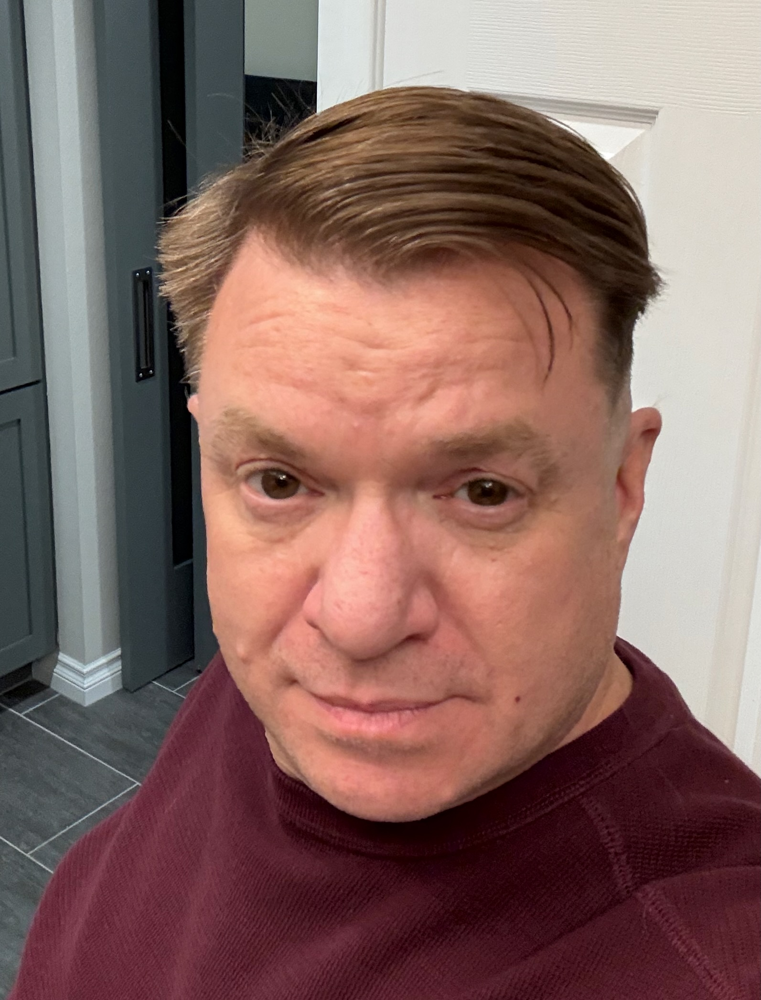

Christopher R. McKlveen

Summary
I am a hard working and dedicated individual with experience in customer service and administration
Education
- Associates of Arts, Westmoreland County Community College, Computer Systems Electronics
- Associates of Arts, Computer Tech of Pittsburgh, Computer Systems Management and Networking
Work Experience
Skills
- Customer Service
- Microsoft Servers
- Linux Servers
- Kubernetes
- Docker
- AWS
Awards and Certificates
- Employee of the Month - McMurry(2014)
- Employee of the Month - McMurry(2010)
Other